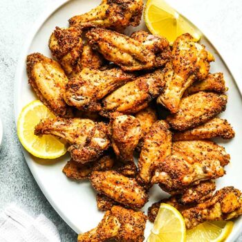

Lemon Pepper Wings

Description
Chicken wings with extra crispy skin (don’t worry, no deep fryer needed) are tossed in zesty buttery lemon sauce and seasoned with freshly cracked pepper. Wing perfection.
This lemon pepper wings recipe is so simple you won’t believe it once you taste them! Just toss your chicken wings with some vegetable or canola oil. Avocado oil is another great one to use because it has a high smoke point.
Ingredients
- 3 lbs chicken wings party style wings cut into sections
- 1 cup all purpose flour
- 2 teaspoons salt
- 1 teaspoon pepper
- oil for frying
- 1/4 cup butter melted
- 1 1/2 tablespoons lemon pepper seasoning
- 2 tablespoons chopped parsley
- lemon wedges and parsley sprigs for serving optional
Steps
- Pace the flour in a large bowl and season with the salt and pepper. Stir to combine.
- Place the chicken wings in the bowl; gently toss to coat with flour mixture.
- Heat 4 inches of oil in a large pot to 350 degrees F.
- Add the chicken wings to the pot in batches of about 6-8 wings. Fry for 10-12 minutes or until wings are deep golden brown and cooked through. Repeat with remaining wings.
- In a small bowl, combine the butter and lemon pepper seasoning. Brush the butter mixture over the chicken wings and toss to coat. Sprinkle with parsley and serve.
- Garnish with lemon wedges and parsley sprigs if desired.